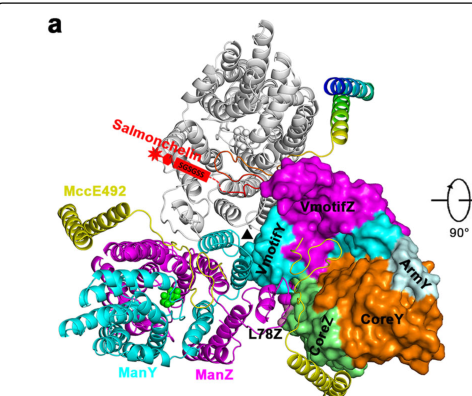

ManY is the EIIC component of the mannose-specific phosphotransferase system (Man-PTS) in E. coli K12. It is an integral inner membrane protein with multiple transmembrane helices that, together with ManZ (EIID), forms the transmembrane translocation channel of the mannose permease. The ManY/ManZ heterodimer assembles into a homotrimer of protomers (PMID:31209249). ManY contains the specific substrate-binding site within its PTS EIIC type-4 domain (UniProt). The ManXYZ complex transports mannose, glucose, fructose, and N-acetylglucosamine via PEP-dependent phosphorylation (PMID:2951378). The Man-PTS also serves as a receptor for bacteriophage lambda DNA injection (ManY was originally identified as the "pel" gene; PMID:353494) and as a chemoreceptor for sugars (PMID:4604906). ManY and ManZ alone are sufficient for lambda DNA penetration, while all three subunits (ManX, ManY, ManZ) are required for sugar transport and phosphorylation (PMID:2951378).
| GO Term | Evidence | Action | Reason |
|---|---|---|---|
|
GO:0005886
plasma membrane
|
IBA
GO_REF:0000033 |
ACCEPT |
Summary: ManY is an integral inner membrane protein confirmed by multiple experimental approaches including topology mapping (PMID:8774730, PMID:15919996), cryo-EM structure (PMID:31209249), and biochemical fractionation (PMID:2951378). In E. coli, "plasma membrane" corresponds to the inner (cytoplasmic) membrane. The IBA annotation is phylogenetically well-supported and matches all available evidence.
Reason: ManY is unambiguously an inner membrane protein. The IBA annotation is consistent with extensive experimental evidence from topology studies, structural data, and biochemical characterization. The term "plasma membrane" (GO:0005886) is the standard GO term for the bacterial inner membrane.
Supporting Evidence:
PMID:2951378
II-PMan (28 kDa) is very hydrophobic...Both are integral membrane proteins and most likely form the transmembrane channel
PMID:15919996
Using C-terminal tagging with the alkaline phosphatase and green fluorescent protein, we established the periplasmic or cytoplasmic locations of the C termini for 601 inner membrane proteins
file:ECOLI/manY/manY-deep-research-falcon.md
forms the **membrane channel and substrate-binding/translocation machinery** responsible for selectively transporting sugars across the inner membrane during PTS-mediated uptake
|
|
GO:0005886
plasma membrane
|
IEA
GO_REF:0000044 |
ACCEPT |
Summary: IEA annotation from UniProt subcellular location mapping. Redundant with IBA and IDA annotations for the same term. Correct but adds no additional information.
Reason: This IEA annotation is consistent with the experimentally supported plasma membrane localization. It is redundant with the IBA (GO_REF:0000033) and IDA (PMID:15919996, PMID:2951378) annotations for the same term, but is not incorrect.
|
|
GO:0005886
plasma membrane
|
IDA
PMID:15919996 Global topology analysis of the Escherichia coli inner membr... |
ACCEPT |
Summary: Daley et al. (2005) performed a global topology analysis of the E. coli inner membrane proteome using C-terminal GFP and PhoA fusions for 601 inner membrane proteins. ManY was included in this study and its inner membrane localization was confirmed experimentally.
Reason: Direct experimental evidence from a large-scale but rigorous topology study confirming ManY as an inner membrane protein. This is valid IDA evidence.
Supporting Evidence:
PMID:15919996
Using C-terminal tagging with the alkaline phosphatase and green fluorescent protein, we established the periplasmic or cytoplasmic locations of the C termini for 601 inner membrane proteins
|
|
GO:0005886
plasma membrane
|
IDA
PMID:2951378 The mannose permease of Escherichia coli consists of three d... |
ACCEPT |
Summary: Erni et al. (1987) characterized ManY (II-PMan) as a very hydrophobic integral membrane protein that forms the transmembrane channel. This characterization established the membrane localization of ManY.
Reason: The original characterization paper by Erni et al. directly identified ManY as an integral membrane protein through biochemical analysis. Valid IDA evidence.
Supporting Evidence:
PMID:2951378
II-PMan (28 kDa) is very hydrophobic...Both are integral membrane proteins and most likely form the transmembrane channel
|
|
GO:0016020
membrane
|
IEA
GO_REF:0000002 |
ACCEPT |
Summary: IEA annotation from InterPro domain mapping (IPR004700, PTS_IIC_man). This is a very general term. ManY is indeed a membrane protein, but the more specific term GO:0005886 (plasma membrane) is already annotated with stronger evidence.
Reason: While this is a less specific term than GO:0005886, it is technically correct and IEA annotations at a broader level than experimentally supported ones are acceptable. The InterPro mapping from PTS_IIC_man domain is appropriate.
|
|
GO:0016020
membrane
|
HDA
PMID:16858726 A complexomic study of Escherichia coli using two-dimensiona... |
ACCEPT |
Summary: Lasserre et al. (2006) identified ManY in membrane protein complexes using 2D BN/SDS-PAGE and LC-MS/MS in a global complexomic study. This provides high-throughput experimental evidence for membrane localization.
Reason: High-throughput direct assay evidence for membrane localization. While the term GO:0016020 (membrane) is less specific than GO:0005886 (plasma membrane), this annotation reflects the evidence available from the complexomic study, which identified ManY in the membrane fraction. Correct and acceptable.
Supporting Evidence:
PMID:16858726
the cytosolic and membrane protein complexes of Escherichia coli were separated...the different partners of each protein complex were identified by LC-MS/MS
|
|
GO:0009401
phosphoenolpyruvate-dependent sugar phosphotransferase system
|
IBA
GO_REF:0000033 |
ACCEPT |
Summary: ManY is a core component of the mannose-specific PEP-dependent sugar PTS. The IBA annotation is phylogenetically sound and reflects the primary biological process in which ManY participates. The ManXYZ complex catalyzes PEP-dependent phosphorylation concomitant with sugar translocation (PMID:2951378).
Reason: This is the central biological process for ManY. The IBA annotation accurately captures the core function of ManY as a component of the PTS. Well supported by extensive experimental literature.
Supporting Evidence:
PMID:2951378
The mannose permease of the bacterial phosphotransferase system mediates sugar transport across the cytoplasmic membrane concomitant with sugar phosphorylation
file:ECOLI/manY/manY-deep-research-falcon.md
so that **transport and phosphorylation occur in a coupled process**
|
|
GO:0009401
phosphoenolpyruvate-dependent sugar phosphotransferase system
|
IEA
GO_REF:0000002 |
ACCEPT |
Summary: IEA annotation from InterPro domain mapping (IPR004700, PTS_IIC_man). Redundant with IBA and IDA annotations for the same term but correct.
Reason: Correct IEA annotation that is consistent with and redundant to the experimentally supported and phylogenetically inferred annotations.
|
|
GO:0009401
phosphoenolpyruvate-dependent sugar phosphotransferase system
|
IDA
PMID:2951378 The mannose permease of Escherichia coli consists of three d... |
ACCEPT |
Summary: Erni et al. (1987) directly demonstrated that ManY is part of the mannose PTS permease, which mediates sugar transport with concomitant phosphorylation. All three subunits are required for sugar transport and phosphorylation. This annotation was made by ComplexPortal based on PMID:2951378.
Reason: Strong experimental evidence directly establishing ManY as a component of the PTS. This is a core function annotation.
Supporting Evidence:
PMID:2951378
The mannose permease of the bacterial phosphotransferase system mediates sugar transport across the cytoplasmic membrane concomitant with sugar phosphorylation...All three subunits are required for sugar transport and phosphorylation
|
|
GO:0015761
mannose transmembrane transport
|
NAS
PMID:2951378 The mannose permease of Escherichia coli consists of three d... |
ACCEPT |
Summary: Erni et al. (1987) described the mannose permease and its role in mannose transport. The NAS evidence code indicates non-traceable author statement. The annotation is correct as mannose is the primary substrate of the Man-PTS.
Reason: Mannose transport is the canonical and primary function of the Man-PTS system. ManY forms the translocation channel with ManZ through which mannose is transported. This is a core biological process for ManY.
Supporting Evidence:
PMID:2951378
The mannose permease of the bacterial phosphotransferase system mediates sugar transport across the cytoplasmic membrane concomitant with sugar phosphorylation
|
|
GO:0015761
mannose transmembrane transport
|
IDA
PMID:5545083 Sugar transport. II. Characterization of constitutive membra... |
ACCEPT |
Summary: Kundig & Roseman (1971) characterized the constitutive membrane-bound enzyme II of the PTS system, including its mannose transport activity. This early work established the biochemical basis for mannose transport by the PTS. Note that the GOA qualifier is "acts_upstream_of_or_within" rather than "involved_in", which is appropriate given the early nature of this work.
Reason: Early foundational work establishing mannose transport activity of the PTS enzyme II. Mannose is the primary substrate, making this a core function.
|
|
GO:0015764
N-acetylglucosamine transport
|
EXP
PMID:6252281 Amino-sugar transport systems of Escherichia coli K12. |
KEEP AS NON CORE |
Summary: Jones-Mortimer & Kornberg (1980) demonstrated that N-acetylglucosamine enters E. coli via the PtsM (Man-PTS) system as one of two distinct PTS pathways for this sugar. ManY, as the EIIC channel component, is directly involved in this transport. GlcNAc is a well-established secondary substrate of the Man-PTS.
Reason: N-acetylglucosamine transport via the Man-PTS is experimentally demonstrated but represents a secondary substrate rather than the primary (mannose) substrate. This is a legitimate function but not the core evolved function of ManY.
Supporting Evidence:
PMID:6252281
N-Acetylglucosamine enters E. coli by two distinct phosphotransferase systems...One of these is the PtsM system
file:ECOLI/manY/manY-deep-research-falcon.md
ManXYZ/ManY is described as mediating PTS uptake/phosphorylation of **mannose** and several other sugars/analogs including **glucose**, **mannosamine**, and **N-acetylglucosamine**, and it can accommodate certain substitutions (e.g., transport/phosphorylation of **2-deoxyglucose**; poor tolerance of substitutions at C-4 and C-6).
|
|
GO:0098708
D-glucose import across plasma membrane
|
IDA
PMID:5545083 Sugar transport. II. Characterization of constitutive membra... |
KEEP AS NON CORE |
Summary: Kundig & Roseman (1971) characterized the PTS enzyme II activities including glucose transport. Glucose is a known substrate of the Man-PTS, though glucose is primarily transported by the glucose-specific PTS (PtsG/Crr). The Man-PTS serves as a secondary glucose uptake system. ManY contributes to this function as the channel-forming EIIC subunit.
Reason: Glucose transport via the Man-PTS is experimentally supported but is a secondary function. Glucose is primarily transported by the dedicated PtsG system. The Man-PTS provides a backup glucose transport route. This is a legitimate but non-core function of ManY.
Supporting Evidence:
file:ECOLI/manY/manY-deep-research-falcon.md
ManXYZ/ManY is described as mediating PTS uptake/phosphorylation of **mannose** and several other sugars/analogs including **glucose**, **mannosamine**, and **N-acetylglucosamine**, and it can accommodate certain substitutions (e.g., transport/phosphorylation of **2-deoxyglucose**; poor tolerance of substitutions at C-4 and C-6).
|
|
GO:1990539
fructose import across plasma membrane
|
EXP
PMID:4153999 The role of phosphotransferase-mediated syntheses of fructos... |
KEEP AS NON CORE |
Summary: Ferenci & Kornberg (1974) studied the role of PTS-mediated fructose phosphorylation in E. coli growth on fructose, demonstrating that the mannose PTS (ptsM) can transport fructose producing fructose 6-phosphate. Fructose is a secondary substrate of the Man-PTS, with fructose being primarily transported by the fructose-specific PTS (FruAB).
Reason: Fructose transport via the Man-PTS is experimentally documented but represents a secondary transport pathway. The primary fructose PTS is FruAB. This is a legitimate but non-core function.
|
|
GO:1990539
fructose import across plasma membrane
|
EXP
PMID:4154035 Genetical analysis of fructose utilization by Escherichia co... |
KEEP AS NON CORE |
Summary: Jones-Mortimer & Kornberg (1974) performed genetic analysis of fructose utilization in E. coli, providing genetic evidence for the involvement of ptsM (Man-PTS) in fructose uptake. This is a duplicate annotation for the same GO term from a companion paper to PMID:4153999.
Reason: Additional genetic evidence for fructose transport via the Man-PTS. Same rationale as the companion annotation from PMID:4153999 -- fructose is a secondary substrate of the Man-PTS.
|
|
GO:0022870
protein-N(PI)-phosphohistidine-mannose phosphotransferase system transporter activity
|
IDA
PMID:2951378 The mannose permease of Escherichia coli consists of three d... |
ACCEPT |
Summary: Erni et al. (1987) directly characterized the mannose permease as mediating PEP-dependent mannose transport with concomitant phosphorylation. GO:0022870 is the specific molecular function term for the mannose PTS transporter activity. ManY (EIIC) contains the specific substrate-binding site and forms the translocation channel with ManZ (EIID). While the full transporter activity requires all three subunits (ManXYZ), ManY is the channel-forming component that directly enables this activity.
Reason: This is the most specific and accurate molecular function term for ManY. The mannose PTS transporter activity is the core molecular function of the ManXYZ complex, and ManY is the EIIC component that contains the substrate binding site and forms the channel. Strongly supported by experimental evidence.
Supporting Evidence:
PMID:2951378
The mannose permease of the bacterial phosphotransferase system mediates sugar transport across the cytoplasmic membrane concomitant with sugar phosphorylation...All three subunits are required for sugar transport and phosphorylation
file:ECOLI/manY/manY-deep-research-falcon.md
forms the **membrane channel and substrate-binding/translocation machinery** responsible for selectively transporting sugars across the inner membrane during PTS-mediated uptake
|
|
GO:1902495
transmembrane transporter complex
|
IPI
PMID:31209249 Structure of the mannose transporter of the bacterial phosph... |
NEW |
Summary: The UniProt record lists GO:1902495 (transmembrane transporter complex, IPI, ComplexPortal) based on the cryo-EM structure showing ManY-ManZ heterodimer forming a homotrimer (PMID:31209249). This annotation was not present in the GOA TSV but is in the UniProt GO cross-references. ManY is part of the D-mannose-specific enzyme II complex (ComplexPortal CPX-5968).
Reason: This CC annotation accurately describes ManY as part of a transmembrane transporter complex. The cryo-EM structure (PMID:31209249) directly demonstrates that ManY and ManZ form a heterodimeric complex that assembles into a homotrimer. ComplexPortal entry CPX-5968 documents this complex.
Supporting Evidence:
PMID:2951378
II-PMan (28 kDa) is very hydrophobic...Both are integral membrane proteins and most likely form the transmembrane channel
file:ECOLI/manY/manY-deep-research-falcon.md
The complex assembles with **threefold symmetry** and a **3:3 stoichiometry** (3 MccE492 : 3 ManYZ), with **mannose localized mid-membrane** in the complex.
|
Q: What is the precise substrate specificity profile of ManY compared to other EIIC components? Are there additional substrates beyond mannose, glucose, fructose, and GlcNAc?
Q: Is there a more specific GO CC term than "transmembrane transporter complex" (GO:1902495) that could capture the specific Man-PTS complex architecture?
Q: Should the phage lambda DNA receptor function and chemoreceptor function of ManY be annotated with GO terms? These are well-documented non-transport functions.
Suggested experts: Erni B
Q: What is the relative contribution of the Man-PTS versus PtsG for glucose uptake under physiological conditions?
Experiment: Systematic substrate specificity profiling of the ManYZ channel using purified reconstituted proteoliposomes to determine the full range of transported sugars.
Hypothesis: The Man-PTS may transport additional sugar substrates beyond mannose, glucose, fructose, and N-acetylglucosamine.
Experiment: Higher resolution cryo-EM structures of ManYZ in different conformational states (with and without substrate) to understand the transport mechanism and substrate binding in ManY.
Hypothesis: ManY undergoes conformational changes during substrate translocation that can be captured by structural studies.
The research report should be a detailed narrative explaining the function, biological processes, and localization of the gene product. Citations should be given for all claims.
You should prioritize authoritative reviews and primary scientific literature when conducting research. You can supplement
this with annotations you find in gene/protein databases, but these can be outdated or inaccurate.
We are specifically interested in the primary function of the gene - for enzymes, what reaction is catalyzed, and what is the substrate specificity? For transporters, what is the substrate? For structural proteins or adapters, what is the broader structural role? For signaling molecules, what is the role in the pathway.
We are interested in where in or outside the cell the gene product carries out its function.
We are also interested in the signaling or biochemical pathways in which the gene functions. We are less interested in broad pleiotropic effects, except where these elucidate the precise role.
Include evidence where possible. We are interested in both experimental evidence as well as inference from structure, evolution, or bioinformatic analysis. Precise studies should be prioritized over high-throughput, where available.
The E. coli K-12 gene manY (UniProt P69801) encodes IIC_Man (EIIC-Man), the integral inner-membrane permease subunit of the mannose-family phosphoenolpyruvate:sugar phosphotransferase system (PTS) transporter ManXYZ. In the canonical gene-to-subunit assignment, manX → IIAB_Man, manY → IIC_Man, and manZ → IID_Man. (seip1994mannosetransporterof pages 1-2)
ManY’s primary role is to form (with ManZ) the membrane translocation pathway that couples sugar transport to phosphorylation (group translocation). While mannose is the defining substrate, the E. coli ManXYZ system is also used for uptake/phosphorylation of glucose and multiple amino-sugars/sugar analogs (e.g., 2-deoxyglucose, N-acetylglucosamine, mannosamine/glucosamine) in a broad-specificity “mannose-family” PTS context. (jeckelmann2019carbohydratetransportby pages 27-30, aboulwafa2020proteinproteininteractionsin pages 2-4)
Recent work (2024) demonstrates that E. coli’s relatively slow growth on mannose is not an immutable biochemical limitation of the ManXYZ transporter; instead, it is largely a regulatory/resource-allocation outcome that can be reversed by chromosomal promoter rewiring increasing manXYZ and downstream mannose-metabolic expression, yielding growth on mannose comparable to wild-type growth on glucose. (mukherjee2024plasticityofgrowth pages 10-11, mukherjee2024plasticityofgrowth pages 9-10)
Primary biochemical literature directly assigns E. coli mannose-PTS genes to subunits: “manX, manY, and manZ, genes encoding IIAB_Man, IIC_Man, and IID_Man, respectively.” (Biochemistry, 1994-06; DOI URL: https://doi.org/10.1021/bi00189a021) (seip1994mannosetransporterof pages 1-2)
This mapping matches the user-specified UniProt identity: UniProt P69801 = PTS system mannose-specific EIIC component, gene manY (E. coli K-12). (seip1994mannosetransporterof pages 1-2)
In E. coli K-12, the mannose-specific PTS is encoded by manXYZ, which collectively supplies the mannose PTS Enzyme II components (EIIAB_Man–EIIC_Man–EIID_Man); deletion of manXYZ abolishes mannose utilization/transport. (Journal of Bacteriology, 2006-08; DOI URL: https://doi.org/10.1128/jb.00219-06) (becker2006yeeianovel pages 1-2, becker2006yeeianovel pages 3-4)
The bacterial PTS is a group translocation system: phosphate from phosphoenolpyruvate (PEP) is transferred through a protein phosphorylation cascade (EI → HPr → EIIA → EIIB) to the incoming sugar, so that transport and phosphorylation occur in a coupled process. The overall PEP→sugar phosphoryl transfer is energetically favorable (reported ΔG° ~ −48 kJ·mol−1 in a PTS context). (jeckelmann2019carbohydratetransportby pages 27-30)
The mannose-family PTS transporters are multi-subunit systems with soluble IIA/IIB (or IIAB) phosphotransfer components and membrane IIC + IID components; the IIC and IID subunits are both required for functional membrane transport and for certain receptor functions (e.g., phage/toxin entry). (jeckelmann2019carbohydratetransportby pages 27-30)
ManY (IIC_Man/EIIC-Man) is the integral inner-membrane permease subunit that—together with ManZ (IID_Man)—forms the membrane channel and substrate-binding/translocation machinery responsible for selectively transporting sugars across the inner membrane during PTS-mediated uptake. (seip1994mannosetransporterof pages 1-2, jeckelmann2019carbohydratetransportby pages 27-30)
The functional outcome of ManXYZ activity is import of specific hexoses/hexosamines with concomitant phosphorylation (cytosolic sugar-phosphate formation). Mechanistically, phosphate is relayed via soluble PTS components to the EIIB phosphocarrier and then to the sugar during translocation. (jeckelmann2019carbohydratetransportby pages 27-30, seip1994mannosetransporterof pages 1-2)
A key feature of the E. coli mannose-family transporter is broad specificity beyond mannose. In review-level synthesis of experimental data, ManXYZ/ManY is described as mediating PTS uptake/phosphorylation of mannose and several other sugars/analogs including glucose, mannosamine, and N-acetylglucosamine, and it can accommodate certain substitutions (e.g., transport/phosphorylation of 2-deoxyglucose; poor tolerance of substitutions at C-4 and C-6). (jeckelmann2019carbohydratetransportby pages 27-30, aboulwafa2020proteinproteininteractionsin pages 2-4)
Reconstituted mannose-family IICIID complexes (membrane components corresponding to ManY/ManZ-type) have been reported with distinct kinetics for vectorial (physiological) vs non-vectorial phosphorylation:
- Vectorial phosphorylation: Km ≈ 30 μM, kcat ≈ 1.2 s−1
- Non-vectorial phosphorylation: Km ≈ 0.1 mM, kcat ≈ 3 s−1
These values are presented in an authoritative review of the PTS literature and are used to illustrate the mechanistic coupling of transport and phosphorylation. (jeckelmann2019carbohydratetransportby pages 27-30)
ManY is a cytoplasmic (inner) membrane protein. Together with ManZ it forms the membrane portion of the transporter (IIC/IID). (seip1994mannosetransporterof pages 1-2, jeckelmann2019carbohydratetransportby pages 27-30)
Experimental fusion-mapping and consensus models suggest that IIC_Man (ManY) contains approximately 6 transmembrane segments (with some models allowing 6–8), with N- and C-termini in the cytoplasm; topology predictions for mannose-family IIC/IID have historically been challenging and remain uncertain in older literature. (jeckelmann2019carbohydratetransportby pages 27-30)
A cryo-EM structure of the ManYZ inner-membrane components complexed with the bacteriocin microcin E492 (MccE492) provides detailed architecture. In this structure:
- ManY and ManZ each contain Core, Arm, and Vmotif domain types.
- The complex assembles with threefold symmetry and a 3:3 stoichiometry (3 MccE492 : 3 ManYZ), with mannose localized mid-membrane in the complex.
- Reported cryo-EM reconstruction achieved 2.28 Å overall resolution from 92,052 particles.
(huang2021structureofthe pages 1-3, huang2021structureofthe media feebbc59)
A conformational comparison between apo (inward-facing) and bacteriocin-bound occluded state supports a large “elevator-like” motion: a rigid-body rotation (~47°) and translation (~11 Å) of a Core domain during transition to an occluded state. (huang2021structureofthe pages 3-4)
The manXYZ operon supplies the core components of the D-mannose-specific PTS; deletion of manXYZ abolishes mannose transport/utilization in E. coli K-12, supporting its role as the principal mannose uptake route. (becker2006yeeianovel pages 1-2)
The ManY/ManZ (IIC/IID) membrane complex is exploited as an inner-membrane receptor/gateway in microbial antagonism and infection biology:
- Microcin E492 inserts into the cytoplasmic membrane and associates with ManYZ, using ManYZ as a receptor in a Trojan-horse entry mechanism (outer membrane entry via siderophore receptors followed by inner-membrane association). (huang2021structureofthe pages 1-3)
- The ManYZ complex is implicated as an inner-membrane receptor involved in bacteriophage λ entry; structural analysis suggests MccE492 binds away from the interface proposed to form the λ DNA tunnel and thus may not block λ infection. (huang2021structureofthe pages 3-4)
Mukherjee et al. (PLOS Computational Biology, 2024-01; DOI URL: https://doi.org/10.1371/journal.pcbi.1011735) engineered E. coli by rewiring chromosomal regulation of mannose uptake and catabolism:
- Replaced the native promoter of the manXYZ operon with a strong heterologous promoter (e.g., PptsG or Ptet), increased manA expression (Ptet-manA), and deleted mlc (a regulator affecting PTS expression).
- The resulting “swapped promoter” strain grew on mannose minimal medium at the same rate as wild-type on glucose minimal medium, with reported statistics: WT glucose vs WT mannose P < 0.0001; WT mannose vs engineered strain on mannose P < 0.0001; and WT glucose vs engineered strain on mannose: not significant.
(mukherjee2024plasticityofgrowth pages 10-11, mukherjee2024plasticityofgrowth pages 9-10, mukherjee2024plasticityofgrowth pages 6-7)
Interpretation: this study supports an expert-level conclusion that the apparent “poorness” of mannose as a carbon source in E. coli is largely governed by regulatory architecture and proteome allocation, rather than inherent biochemical constraints of ManY/ManXYZ transport chemistry. (mukherjee2024plasticityofgrowth pages 10-11, mukherjee2024plasticityofgrowth pages 9-10)
Although not 2023–2024, Aboulwafa et al. provide experimental evidence that ManYZ/ManXYZ participates in a broader network of membrane protein–protein interactions affecting PTS activities; importantly, they show manYZ co-expression has much larger functional consequences than manY alone, consistent with ManY requiring ManZ for stable/functional membrane complex formation. (Microbial Physiology, 2020-09; DOI URL: https://doi.org/10.1159/000510257) (aboulwafa2020proteinproteininteractionsin pages 5-6, aboulwafa2020proteinproteininteractionsin pages 1-2)
The manXYZ system is a frequent engineering lever in E. coli strain design because it directly controls PTS-dependent sugar uptake and phosphorylation, shaping carbon flux and global regulation. The 2024 promoter-swap study demonstrates a concrete “implementation”: chromosomal promoter rewiring of manXYZ can markedly alter growth performance on mannose—an approach conceptually aligned with industrial strain optimization where transporter expression is tuned to match desired substrate and productivity profiles. (mukherjee2024plasticityofgrowth pages 10-11, mukherjee2024plasticityofgrowth pages 6-7)
The ManY/ManZ complex’s receptor role for microcin E492 is mechanistically important for designing or understanding bacteriocin-based antagonism strategies. High-resolution structural characterization provides a framework for rational engineering of toxin–receptor interactions. (huang2021structureofthe pages 1-3, huang2021structureofthe pages 3-4)
The following table consolidates gene-to-subunit mapping, localization/topology, substrate scope, quantitative values, and key references.
| Component / gene | Protein name / subunit | Cellular localization / topology notes | Molecular function & substrates | Key quantitative data | Key references (year, DOI URL) |
|---|---|---|---|---|---|
| manX | IIABMan (cytosolic Enzyme IIAB component of mannose-family PTS) | Peripheral/cytosolic phosphotransfer protein; IIA is a homodimeric soluble domain and IIB carries the phospho-accepting histidine/cysteine chemistry typical of the mannose-family pathway; associates with membrane ManY/ManZ complex in the full transporter (seip1994mannosetransporterof pages 1-2, jeckelmann2019carbohydratetransportby pages 27-30) | Receives phosphate from HPr and passes it toward the sugar during group translocation by ManXYZ; part of the transporter used for uptake/phosphorylation of mannose, and also contributes to transport of glucose, 2-deoxyglucose, glucosamine / N-acetylglucosamine in E. coli mannose-family PTS context (seip1994mannosetransporterof pages 1-2, jeckelmann2019carbohydratetransportby pages 27-30, aboulwafa2020proteinproteininteractionsin pages 2-4) | Stable transport complex described as IIABman2:(IICmanIIDman)2; overall PEP→sugar phosphotransfer is strongly favorable (ΔG° ≈ −48 kJ·mol−1) for the PTS pathway (jeckelmann2019carbohydratetransportby pages 27-30) | Seip et al. 1994, Biochemistry, DOI: https://doi.org/10.1021/bi00189a021 (seip1994mannosetransporterof pages 1-2); Jeckelmann & Erni 2019, DOI: https://doi.org/10.1007/978-3-030-18768-2_8 (jeckelmann2019carbohydratetransportby pages 27-30) |
| manY (UniProt P69801; b1818/JW1807 in UniProt context) | IICMan / EIIC-Man; mannose permease IIC component | Integral inner-membrane subunit of ManXYZ. Seip 1994 explicitly maps manY → IICMan. Experimental/speculative topology literature supports ~6 TM segments (possibly 6–8 TM in consensus models) with cytoplasmic N- and C-termini; forms a tight membrane complex with ManZ and contributes Core/Arm/Vmotif architecture in cryo-EM ManYZ structures (seip1994mannosetransporterof pages 1-2, jeckelmann2019carbohydratetransportby pages 27-30, huang2021structureofthe pages 1-3, huang2021structureofthe media feebbc59) | Primary permease subunit for PTS-mediated uptake coupled to phosphorylation of mannose; broader specificity includes glucose, mannosamine, 2-deoxyglucose, glucosamine/N-acetylglucosamine, with poor tolerance for C-4/C-6 sugar substitutions. Physiologically part of the sole mannose uptake system in E. coli and involved in scavenging cell-wall-derived amino sugars (jeckelmann2019carbohydratetransportby pages 27-30, aboulwafa2020proteinproteininteractionsin pages 2-4) | Reconstituted mannose-family IICIID complexes: vectorial phosphorylation Km ≈ 30 μM, kcat ≈ 1.2 s−1; non-vectorial phosphorylation Km ≈ 0.1 mM, kcat ≈ 3 s−1. manY alone overexpression caused only modest uptake changes (e.g., ~1.6-fold for αMG, ~1.1-fold for GlcNAc), whereas manYZ co-overexpression strongly stimulated uptake (αMG ~14.0-fold, 2DG ~10.8-fold, mannitol ~2.1-fold) (jeckelmann2019carbohydratetransportby pages 27-30, aboulwafa2020proteinproteininteractionsin pages 2-4, aboulwafa2020proteinproteininteractionsin pages 5-6, aboulwafa2020proteinproteininteractionsin pages 4-5) | Seip et al. 1994, DOI: https://doi.org/10.1021/bi00189a021 (explicit manY→IICMan) (seip1994mannosetransporterof pages 1-2); Jeckelmann & Erni 2019, DOI: https://doi.org/10.1007/978-3-030-18768-2_8 (jeckelmann2019carbohydratetransportby pages 27-30); Aboulwafa et al. 2020, DOI: https://doi.org/10.1159/000510257 (aboulwafa2020proteinproteininteractionsin pages 4-5, aboulwafa2020proteinproteininteractionsin pages 2-4, aboulwafa2020proteinproteininteractionsin pages 5-6); Huang et al. 2021, DOI: https://doi.org/10.1038/s41421-021-00253-6 (huang2021structureofthe pages 1-3) |
| manZ | IIDMan / EIID-Man | Integral inner-membrane partner of ManY; tightly associated and apparently required for stable ManY function/expression. Topology models suggest a large N-terminal cytoplasmic domain plus multiple C-terminal TM segments; in cryo-EM ManYZ each protomer contributes Core/Arm/Vmotif elements, and ManY/ManZ assemble as a membrane complex (jeckelmann2019carbohydratetransportby pages 27-30, huang2021structureofthe pages 1-3, huang2021structureofthe pages 3-4) | Partner permease subunit that works with ManY to form the membrane translocation/phosphorylation apparatus for mannose-family substrates; required for full transport activity and receptor functions for certain toxins/phages (jeckelmann2019carbohydratetransportby pages 27-30, jeckelmann2019carbohydratetransportby pages 30-33) | manYZ, but not manY alone, strongly increased uptake of heterologous PTS substrates in overexpression assays; authors note ManY is thought to be unstable in the absence of ManZ (aboulwafa2020proteinproteininteractionsin pages 5-6, aboulwafa2020proteinproteininteractionsin pages 1-2) | Jeckelmann & Erni 2019, DOI: https://doi.org/10.1007/978-3-030-18768-2_8 (jeckelmann2019carbohydratetransportby pages 30-33, jeckelmann2019carbohydratetransportby pages 27-30); Huang et al. 2021, DOI: https://doi.org/10.1038/s41421-021-00253-6 (huang2021structureofthe pages 3-4, huang2021structureofthe pages 1-3); Aboulwafa et al. 2020, DOI: https://doi.org/10.1159/000510257 (aboulwafa2020proteinproteininteractionsin pages 5-6, aboulwafa2020proteinproteininteractionsin pages 1-2) |
| ManXYZ system-level finding | Mannose-family PTS transporter (IIAB/IIC/IID) | Inner membrane transporter with cytosolic phosphotransfer components; historic biochemical models described a dimer of IICIID protomers, while cryo-EM of the MccE492–ManYZ complex resolved a 3:3 assembly with mannose located mid-membrane and domain organization into Core, Arm, Vmotif (jeckelmann2019carbohydratetransportby pages 27-30, huang2021structureofthe pages 1-3, huang2021structureofthe media feebbc59) | Main physiological role is group translocation: transport plus phosphorylation of mannose-family sugars. Also acts as an inner-membrane receptor exploited by bacteriophage λ and microcin E492; microcin binding occurs without blocking λ receptor interface (jeckelmann2019carbohydratetransportby pages 30-33, huang2021structureofthe pages 3-4) | Cryo-EM reconstruction of MccE492–ManYZ reached 2.28 Å from 92,052 particles; conformational change to occluded state involved ~47° Core rotation and ~11 Å translation (huang2021structureofthe pages 1-3, huang2021structureofthe pages 3-4) | Huang et al. 2021, DOI: https://doi.org/10.1038/s41421-021-00253-6 (huang2021structureofthe pages 3-4, huang2021structureofthe pages 1-3, huang2021structureofthe media feebbc59); Jeckelmann & Erni 2019, DOI: https://doi.org/10.1007/978-3-030-18768-2_8 (jeckelmann2019carbohydratetransportby pages 30-33, jeckelmann2019carbohydratetransportby pages 27-30) |
| Recent 2024 development relevant to manY/manXYZ | Promoter-engineered mannose PTS / mannose catabolism strain | Chromosomal promoter driving manXYZ replaced with strong heterologous promoter (PptsG or Ptet), combined with Δmlc and stronger manA expression to rewire mannose utilization (mukherjee2024plasticityofgrowth pages 6-7, mukherjee2024plasticityofgrowth pages 5-6) | Demonstrated that slow E. coli growth on mannose is not an intrinsic limitation of ManXYZ chemistry alone; instead, regulatory/proteome allocation limits mannose performance. Strengthening manXYZ and downstream mannose catabolic expression can make mannose behave like a high-quality substrate (mukherjee2024plasticityofgrowth pages 10-11, mukherjee2024plasticityofgrowth pages 9-10) | Engineered strain YCE119 grew on mannose minimal medium at the same rate as wild-type on glucose; statistics reported WT glucose vs WT mannose P < 0.0001, WT mannose vs YCE119 mannose P < 0.0001, while WT glucose vs YCE119 mannose was not significant (mukherjee2024plasticityofgrowth pages 10-11, mukherjee2024plasticityofgrowth pages 9-10) | Mukherjee et al. 2024, PLOS Comput Biol, DOI: https://doi.org/10.1371/journal.pcbi.1011735 (mukherjee2024plasticityofgrowth pages 10-11, mukherjee2024plasticityofgrowth pages 9-10, mukherjee2024plasticityofgrowth pages 6-7, mukherjee2024plasticityofgrowth pages 5-6) |
Table: This table summarizes the E. coli K-12 mannose-family PTS with emphasis on manY (UniProt P69801), including subunit assignments, membrane topology/function, quantitative transport data, and recent 2024 regulatory-engineering findings. It is useful for quickly verifying that manY is the EIIC permease subunit and for linking classic biochemical understanding to current physiological and structural studies.
Cropped Figure 1 panels from the ManYZ–microcin cryo-EM study show the domain architecture (Core/Arm/Vmotif) and the 3:3 assembly of MccE492 with ManYZ, supporting ManY’s role as a core inner-membrane structural component of the complex. (huang2021structureofthe media feebbc59, huang2021structureofthe media 7f7a09c3)
References
(seip1994mannosetransporterof pages 1-2): Stephan Seip, Jochen Balbach, Stefan Behrens, Horst Kessler, Karin Fluekiger, Rita de Meyer, and Bernhard Erni. Mannose transporter of escherichia coli. backbone assignments and secondary structure of the iia domain of the iiabman subunit. Biochemistry, 33 23:7174-83, Jun 1994. URL: https://doi.org/10.1021/bi00189a021, doi:10.1021/bi00189a021. This article has 25 citations and is from a peer-reviewed journal.
(jeckelmann2019carbohydratetransportby pages 27-30): Jean-Marc Jeckelmann and Bernhard Erni. Carbohydrate transport by group translocation: the bacterial phosphoenolpyruvate: sugar phosphotransferase system. Sub-cellular biochemistry, 92:223-274, Jan 2019. URL: https://doi.org/10.1007/978-3-030-18768-2_8, doi:10.1007/978-3-030-18768-2_8. This article has 63 citations.
(aboulwafa2020proteinproteininteractionsin pages 2-4): Mohammad M. Aboulwafa, Zhongge Zhang, and M. Saier. Protein-protein interactions in the cytoplasmic membrane of escherichia coli: influence of the overexpression of diverse transporter-encoding genes on the activities of pts sugar uptake systems. Microbial Physiology, 30:36-49, Sep 2020. URL: https://doi.org/10.1159/000510257, doi:10.1159/000510257. This article has 5 citations.
(mukherjee2024plasticityofgrowth pages 10-11): Avik Mukherjee, Yu-Fang Chang, Yanqing Huang, Nina Catherine Benites, Leander Ammar, Jade Ealy, Mark Polk, and Markus Basan. Plasticity of growth laws tunes resource allocation strategies in bacteria. PLOS Computational Biology, 20:e1011735, Jan 2024. URL: https://doi.org/10.1371/journal.pcbi.1011735, doi:10.1371/journal.pcbi.1011735. This article has 10 citations and is from a highest quality peer-reviewed journal.
(mukherjee2024plasticityofgrowth pages 9-10): Avik Mukherjee, Yu-Fang Chang, Yanqing Huang, Nina Catherine Benites, Leander Ammar, Jade Ealy, Mark Polk, and Markus Basan. Plasticity of growth laws tunes resource allocation strategies in bacteria. PLOS Computational Biology, 20:e1011735, Jan 2024. URL: https://doi.org/10.1371/journal.pcbi.1011735, doi:10.1371/journal.pcbi.1011735. This article has 10 citations and is from a highest quality peer-reviewed journal.
(becker2006yeeianovel pages 1-2): Ann-Katrin Becker, Tim Zeppenfeld, Ariane Staab, Sabine Seitz, Winfried Boos, Teppei Morita, Hiroji Aiba, Kerstin Mahr, Fritz Titgemeyer, and Knut Jahreis. Yeei, a novel protein involved in modulation of the activity of the glucose-phosphotransferase system in escherichia coli k-12. Journal of Bacteriology, 188:5439-5449, Aug 2006. URL: https://doi.org/10.1128/jb.00219-06, doi:10.1128/jb.00219-06. This article has 29 citations and is from a peer-reviewed journal.
(becker2006yeeianovel pages 3-4): Ann-Katrin Becker, Tim Zeppenfeld, Ariane Staab, Sabine Seitz, Winfried Boos, Teppei Morita, Hiroji Aiba, Kerstin Mahr, Fritz Titgemeyer, and Knut Jahreis. Yeei, a novel protein involved in modulation of the activity of the glucose-phosphotransferase system in escherichia coli k-12. Journal of Bacteriology, 188:5439-5449, Aug 2006. URL: https://doi.org/10.1128/jb.00219-06, doi:10.1128/jb.00219-06. This article has 29 citations and is from a peer-reviewed journal.
(huang2021structureofthe pages 1-3): Kai Huang, Jianwei Zeng, Xueli Liu, Tianyu Jiang, and Jiawei Wang. Structure of the mannose phosphotransferase system (man-pts) complexed with microcin e492, a pore-forming bacteriocin. Cell Discovery, Apr 2021. URL: https://doi.org/10.1038/s41421-021-00253-6, doi:10.1038/s41421-021-00253-6. This article has 33 citations and is from a peer-reviewed journal.
(huang2021structureofthe media feebbc59): Kai Huang, Jianwei Zeng, Xueli Liu, Tianyu Jiang, and Jiawei Wang. Structure of the mannose phosphotransferase system (man-pts) complexed with microcin e492, a pore-forming bacteriocin. Cell Discovery, Apr 2021. URL: https://doi.org/10.1038/s41421-021-00253-6, doi:10.1038/s41421-021-00253-6. This article has 33 citations and is from a peer-reviewed journal.
(huang2021structureofthe pages 3-4): Kai Huang, Jianwei Zeng, Xueli Liu, Tianyu Jiang, and Jiawei Wang. Structure of the mannose phosphotransferase system (man-pts) complexed with microcin e492, a pore-forming bacteriocin. Cell Discovery, Apr 2021. URL: https://doi.org/10.1038/s41421-021-00253-6, doi:10.1038/s41421-021-00253-6. This article has 33 citations and is from a peer-reviewed journal.
(mukherjee2024plasticityofgrowth pages 6-7): Avik Mukherjee, Yu-Fang Chang, Yanqing Huang, Nina Catherine Benites, Leander Ammar, Jade Ealy, Mark Polk, and Markus Basan. Plasticity of growth laws tunes resource allocation strategies in bacteria. PLOS Computational Biology, 20:e1011735, Jan 2024. URL: https://doi.org/10.1371/journal.pcbi.1011735, doi:10.1371/journal.pcbi.1011735. This article has 10 citations and is from a highest quality peer-reviewed journal.
(aboulwafa2020proteinproteininteractionsin pages 5-6): Mohammad M. Aboulwafa, Zhongge Zhang, and M. Saier. Protein-protein interactions in the cytoplasmic membrane of escherichia coli: influence of the overexpression of diverse transporter-encoding genes on the activities of pts sugar uptake systems. Microbial Physiology, 30:36-49, Sep 2020. URL: https://doi.org/10.1159/000510257, doi:10.1159/000510257. This article has 5 citations.
(aboulwafa2020proteinproteininteractionsin pages 1-2): Mohammad M. Aboulwafa, Zhongge Zhang, and M. Saier. Protein-protein interactions in the cytoplasmic membrane of escherichia coli: influence of the overexpression of diverse transporter-encoding genes on the activities of pts sugar uptake systems. Microbial Physiology, 30:36-49, Sep 2020. URL: https://doi.org/10.1159/000510257, doi:10.1159/000510257. This article has 5 citations.
(aboulwafa2020proteinproteininteractionsin pages 4-5): Mohammad M. Aboulwafa, Zhongge Zhang, and M. Saier. Protein-protein interactions in the cytoplasmic membrane of escherichia coli: influence of the overexpression of diverse transporter-encoding genes on the activities of pts sugar uptake systems. Microbial Physiology, 30:36-49, Sep 2020. URL: https://doi.org/10.1159/000510257, doi:10.1159/000510257. This article has 5 citations.
(jeckelmann2019carbohydratetransportby pages 30-33): Jean-Marc Jeckelmann and Bernhard Erni. Carbohydrate transport by group translocation: the bacterial phosphoenolpyruvate: sugar phosphotransferase system. Sub-cellular biochemistry, 92:223-274, Jan 2019. URL: https://doi.org/10.1007/978-3-030-18768-2_8, doi:10.1007/978-3-030-18768-2_8. This article has 63 citations.
(mukherjee2024plasticityofgrowth pages 5-6): Avik Mukherjee, Yu-Fang Chang, Yanqing Huang, Nina Catherine Benites, Leander Ammar, Jade Ealy, Mark Polk, and Markus Basan. Plasticity of growth laws tunes resource allocation strategies in bacteria. PLOS Computational Biology, 20:e1011735, Jan 2024. URL: https://doi.org/10.1371/journal.pcbi.1011735, doi:10.1371/journal.pcbi.1011735. This article has 10 citations and is from a highest quality peer-reviewed journal.
(huang2021structureofthe media 7f7a09c3): Kai Huang, Jianwei Zeng, Xueli Liu, Tianyu Jiang, and Jiawei Wang. Structure of the mannose phosphotransferase system (man-pts) complexed with microcin e492, a pore-forming bacteriocin. Cell Discovery, Apr 2021. URL: https://doi.org/10.1038/s41421-021-00253-6, doi:10.1038/s41421-021-00253-6. This article has 33 citations and is from a peer-reviewed journal.

ManY is the EIIC component of the mannose-specific phosphotransferase system (Man-PTS) in E. coli K12. Gene synonyms include pel (phage exclusion locus) and ptsP.
id: P69801
gene_symbol: manY
product_type: PROTEIN
status: COMPLETE
taxon:
id: NCBITaxon:83333
label: Escherichia coli (strain K12)
description: >-
ManY is the EIIC component of the mannose-specific phosphotransferase system
(Man-PTS) in E. coli K12. It is an integral inner membrane protein with
multiple transmembrane helices that, together with ManZ (EIID), forms the
transmembrane translocation channel of the mannose permease. The ManY/ManZ
heterodimer assembles into a homotrimer of protomers (PMID:31209249). ManY
contains the specific substrate-binding site within its PTS EIIC type-4 domain
(UniProt). The ManXYZ complex transports mannose, glucose, fructose, and
N-acetylglucosamine via PEP-dependent phosphorylation (PMID:2951378).
The Man-PTS also serves as a receptor for bacteriophage lambda DNA injection
(ManY was originally identified as the "pel" gene; PMID:353494) and as a
chemoreceptor for sugars (PMID:4604906). ManY and ManZ alone are sufficient
for lambda DNA penetration, while all three subunits (ManX, ManY, ManZ) are
required for sugar transport and phosphorylation (PMID:2951378).
references:
- id: PMID:2951378
title: The mannose permease of Escherichia coli consists of three different proteins.
Amino acid sequence and function in sugar transport, sugar phosphorylation, and
penetration of phage lambda DNA.
findings:
- statement: The mannose permease consists of three subunits (IIIMan/ManX, II-PMan/ManY,
II-MMan/ManZ) that are all required for sugar transport and phosphorylation.
supporting_text: The permease consists of three different subunits, IIIMan, II-PMan,
and II-MMan, which are encoded in a single transcriptional unit ptsLPM
- statement: ManY (II-PMan) is very hydrophobic and is an integral membrane protein
that forms the transmembrane channel together with ManZ (II-MMan).
supporting_text: II-PMan (28 kDa) is very hydrophobic...Both are integral membrane
proteins and most likely form the transmembrane channel
- statement: ManY and ManZ alone are sufficient for lambda DNA penetration.
supporting_text: II-PMan and II-MMan alone are sufficient for penetration of lambda
DNA
- statement: The Man-PTS mediates sugar transport concomitant with phosphorylation
and also functions as a chemoreceptor and phage lambda pore.
supporting_text: The mannose permease of the bacterial phosphotransferase system
mediates sugar transport across the cytoplasmic membrane concomitant with sugar
phosphorylation. It also functions as a receptor for bacterial chemotaxis and
is required for infection of the cell by bacteriophage lambda where it most
likely functions as a pore for penetration of lambda DNA
- id: PMID:5545083
title: Sugar transport. II. Characterization of constitutive membrane-bound enzymes
II of the Escherichia coli phosphotransferase system.
findings:
- statement: Characterization of PTS enzyme II activities for mannose and glucose
transport in E. coli membranes.
- id: PMID:6252281
title: Amino-sugar transport systems of Escherichia coli K12.
findings:
- statement: N-acetylglucosamine enters E. coli by two distinct PTS systems; one
of these is the PtsM (Man-PTS) system.
supporting_text: N-Acetylglucosamine enters E. coli by two distinct phosphotransferase
systems...One of these is the PtsM system
- id: PMID:4153999
title: The role of phosphotransferase-mediated syntheses of fructose 1-phosphate
and fructose 6-phosphate in the growth of Escherichia coli on fructose.
findings:
- statement: Fructose can be transported via the mannose PTS (ptsM) producing fructose
6-phosphate.
- id: PMID:4154035
title: Genetical analysis of fructose utilization by Escherichia coli.
findings:
- statement: Genetic analysis of fructose utilization pathways in E. coli, including
the role of ptsM.
- id: PMID:15919996
title: Global topology analysis of the Escherichia coli inner membrane proteome.
findings:
- statement: Global topology analysis confirmed ManY as an inner membrane protein
with cytoplasmic C-terminus using C-terminal GFP/PhoA fusions.
supporting_text: Using C-terminal tagging with the alkaline phosphatase and green
fluorescent protein, we established the periplasmic or cytoplasmic locations
of the C termini for 601 inner membrane proteins
- id: PMID:16858726
title: A complexomic study of Escherichia coli using two-dimensional blue native/SDS
polyacrylamide gel electrophoresis.
findings:
- statement: ManY was identified in membrane protein complexes by 2D BN/SDS-PAGE
and LC-MS/MS, confirming its membrane localization.
supporting_text: the cytosolic and membrane protein complexes of Escherichia coli
were separated...the different partners of each protein complex were identified
by LC-MS/MS
- id: PMID:353494
title: E. coli K-12 pel mutants, which block phage lambda DNA injection, coincide
with ptsM, which determines a component of a sugar transport system.
findings:
- statement: pel mutations that block phage lambda DNA injection map to ptsM (manY),
establishing the mannose permease as the receptor for phage lambda DNA injection.
- id: PMID:4604906
title: Phosphotransferase-system enzymes as chemoreceptors for certain sugars in
Escherichia coli chemotaxis.
findings:
- statement: PTS enzymes serve as chemoreceptors for sugars in E. coli chemotaxis,
with the mannose PTS functioning as a chemoreceptor.
- id: PMID:31209249
title: Structure of the mannose transporter of the bacterial phosphotransferase
system.
findings:
- statement: Cryo-EM structure of ManYZ shows the complex forms a homotrimer of
ManY-ManZ heterodimers.
- id: PMID:8774730
title: Membrane topology of the mannose transporter of Escherichia coli K12.
findings:
- statement: Membrane topology study establishing ManY as a multi-pass inner membrane
protein.
- id: GO_REF:0000033
title: Annotation inferences using phylogenetic trees
- id: GO_REF:0000044
title: Gene Ontology annotation based on UniProtKB/Swiss-Prot Subcellular Location
vocabulary mapping, accompanied by conservative changes to GO terms applied by
UniProt
- id: GO_REF:0000002
title: Gene Ontology annotation through association of InterPro records with GO
terms
- id: file:ECOLI/manY/manY-deep-research-falcon.md
title: 'Falcon (Edison Scientific) deep research report: manY (UniProt P69801),
PTS system mannose-specific EIIC component in E. coli K-12'
findings:
- statement: Seip et al. (1994) explicitly map the E. coli mannose-PTS genes to subunits,
confirming manY encodes the IIC_Man membrane permease subunit.
supporting_text: |-
manX, manY, and manZ, genes encoding IIAB\_Man, IIC\_Man, and IID\_Man, respectively.
reference_section_type: OTHER
- statement: ManY (IIC_Man) together with ManZ (IID_Man) forms the membrane channel
and substrate-binding/translocation machinery; both IIC and IID subunits are
required for functional membrane transport and certain receptor functions.
supporting_text: |-
forms the **membrane channel and substrate-binding/translocation machinery** responsible for selectively transporting sugars across the inner membrane during PTS-mediated uptake
reference_section_type: OTHER
- statement: The mannose-family PTS couples transport to phosphorylation in a single
group-translocation step, with phosphate relayed from PEP through EI->HPr->EIIA->EIIB
to the incoming sugar.
supporting_text: |-
so that **transport and phosphorylation occur in a coupled process**
reference_section_type: OTHER
- statement: The ManXYZ/ManY transporter has broad substrate specificity beyond mannose,
including glucose, mannosamine, N-acetylglucosamine and 2-deoxyglucose, with poor
tolerance for substitutions at C-4 and C-6.
supporting_text: |-
ManXYZ/ManY is described as mediating PTS uptake/phosphorylation of **mannose** and several other sugars/analogs including **glucose**, **mannosamine**, and **N-acetylglucosamine**, and it can accommodate certain substitutions (e.g., transport/phosphorylation of **2-deoxyglucose**; poor tolerance of substitutions at C-4 and C-6).
reference_section_type: OTHER
- statement: ManY requires ManZ for stable, functional membrane complex formation;
ManY is thought to be unstable in the absence of ManZ, and manY-alone overexpression
gives only modest uptake effects.
supporting_text: |-
authors note **ManY is thought to be unstable in the absence of ManZ**
reference_section_type: OTHER
- statement: The cryo-EM ManYZ-microcin E492 structure shows a threefold-symmetric
3:3 assembly with mannose localized mid-membrane, supporting ManY as a core
inner-membrane structural component of the transporter complex.
supporting_text: |-
The complex assembles with **threefold symmetry** and a **3:3 stoichiometry** (3 MccE492 : 3 ManYZ), with **mannose localized mid-membrane** in the complex.
reference_section_type: OTHER
- statement: The ManYZ (IIC/IID) membrane complex serves as an inner-membrane receptor/gateway,
being used by the pore-forming bacteriocin microcin E492 in a Trojan-horse entry
mechanism.
supporting_text: |-
Microcin E492** inserts into the cytoplasmic membrane and associates with ManYZ, using ManYZ as a receptor in a Trojan-horse entry mechanism
reference_section_type: OTHER
- statement: The ManYZ complex is implicated as the inner-membrane receptor for
bacteriophage lambda entry.
supporting_text: |-
The ManYZ complex is implicated as an inner-membrane receptor involved in **bacteriophage λ** entry
reference_section_type: OTHER
existing_annotations:
# ==========================================
# CELLULAR COMPONENT ANNOTATIONS
# ==========================================
# --- plasma membrane (IBA) ---
- term:
id: GO:0005886
label: plasma membrane
evidence_type: IBA
original_reference_id: GO_REF:0000033
review:
summary: ManY is an integral inner membrane protein confirmed by multiple experimental
approaches including topology mapping (PMID:8774730, PMID:15919996), cryo-EM
structure (PMID:31209249), and biochemical fractionation (PMID:2951378). In
E. coli, "plasma membrane" corresponds to the inner (cytoplasmic) membrane.
The IBA annotation is phylogenetically well-supported and matches all available
evidence.
action: ACCEPT
reason: ManY is unambiguously an inner membrane protein. The IBA annotation is
consistent with extensive experimental evidence from topology studies, structural
data, and biochemical characterization. The term "plasma membrane" (GO:0005886)
is the standard GO term for the bacterial inner membrane.
supported_by:
- reference_id: PMID:2951378
supporting_text: II-PMan (28 kDa) is very hydrophobic...Both are integral membrane
proteins and most likely form the transmembrane channel
- reference_id: PMID:15919996
supporting_text: Using C-terminal tagging with the alkaline phosphatase and green
fluorescent protein, we established the periplasmic or cytoplasmic locations
of the C termini for 601 inner membrane proteins
- reference_id: file:ECOLI/manY/manY-deep-research-falcon.md
supporting_text: |-
forms the **membrane channel and substrate-binding/translocation machinery** responsible for selectively transporting sugars across the inner membrane during PTS-mediated uptake
# --- plasma membrane (IEA from UniProt SubCell) ---
- term:
id: GO:0005886
label: plasma membrane
evidence_type: IEA
original_reference_id: GO_REF:0000044
review:
summary: IEA annotation from UniProt subcellular location mapping. Redundant with
IBA and IDA annotations for the same term. Correct but adds no additional information.
action: ACCEPT
reason: This IEA annotation is consistent with the experimentally supported plasma
membrane localization. It is redundant with the IBA (GO_REF:0000033) and IDA
(PMID:15919996, PMID:2951378) annotations for the same term, but is not incorrect.
# --- plasma membrane (IDA from Daley 2005) ---
- term:
id: GO:0005886
label: plasma membrane
evidence_type: IDA
original_reference_id: PMID:15919996
review:
summary: Daley et al. (2005) performed a global topology analysis of the E. coli
inner membrane proteome using C-terminal GFP and PhoA fusions for 601 inner
membrane proteins. ManY was included in this study and its inner membrane
localization was confirmed experimentally.
action: ACCEPT
reason: Direct experimental evidence from a large-scale but rigorous topology study
confirming ManY as an inner membrane protein. This is valid IDA evidence.
supported_by:
- reference_id: PMID:15919996
supporting_text: Using C-terminal tagging with the alkaline phosphatase and green
fluorescent protein, we established the periplasmic or cytoplasmic locations
of the C termini for 601 inner membrane proteins
# --- plasma membrane (IDA from Erni 1987) ---
- term:
id: GO:0005886
label: plasma membrane
evidence_type: IDA
original_reference_id: PMID:2951378
review:
summary: Erni et al. (1987) characterized ManY (II-PMan) as a very hydrophobic
integral membrane protein that forms the transmembrane channel. This characterization
established the membrane localization of ManY.
action: ACCEPT
reason: The original characterization paper by Erni et al. directly identified
ManY as an integral membrane protein through biochemical analysis. Valid IDA
evidence.
supported_by:
- reference_id: PMID:2951378
supporting_text: II-PMan (28 kDa) is very hydrophobic...Both are integral membrane
proteins and most likely form the transmembrane channel
# --- membrane (IEA from InterPro) ---
- term:
id: GO:0016020
label: membrane
evidence_type: IEA
original_reference_id: GO_REF:0000002
review:
summary: IEA annotation from InterPro domain mapping (IPR004700, PTS_IIC_man).
This is a very general term. ManY is indeed a membrane protein, but the more
specific term GO:0005886 (plasma membrane) is already annotated with stronger
evidence.
action: ACCEPT
reason: While this is a less specific term than GO:0005886, it is technically correct
and IEA annotations at a broader level than experimentally supported ones are
acceptable. The InterPro mapping from PTS_IIC_man domain is appropriate.
# --- membrane (HDA from complexomic study) ---
- term:
id: GO:0016020
label: membrane
evidence_type: HDA
original_reference_id: PMID:16858726
review:
summary: Lasserre et al. (2006) identified ManY in membrane protein complexes
using 2D BN/SDS-PAGE and LC-MS/MS in a global complexomic study. This provides
high-throughput experimental evidence for membrane localization.
action: ACCEPT
reason: High-throughput direct assay evidence for membrane localization. While
the term GO:0016020 (membrane) is less specific than GO:0005886 (plasma membrane),
this annotation reflects the evidence available from the complexomic study, which
identified ManY in the membrane fraction. Correct and acceptable.
supported_by:
- reference_id: PMID:16858726
supporting_text: the cytosolic and membrane protein complexes of Escherichia
coli were separated...the different partners of each protein complex were
identified by LC-MS/MS
# ==========================================
# BIOLOGICAL PROCESS ANNOTATIONS
# ==========================================
# --- PEP-dependent sugar PTS (IBA) ---
- term:
id: GO:0009401
label: phosphoenolpyruvate-dependent sugar phosphotransferase system
evidence_type: IBA
original_reference_id: GO_REF:0000033
review:
summary: ManY is a core component of the mannose-specific PEP-dependent sugar
PTS. The IBA annotation is phylogenetically sound and reflects the primary
biological process in which ManY participates. The ManXYZ complex catalyzes
PEP-dependent phosphorylation concomitant with sugar translocation (PMID:2951378).
action: ACCEPT
reason: This is the central biological process for ManY. The IBA annotation
accurately captures the core function of ManY as a component of the PTS. Well
supported by extensive experimental literature.
supported_by:
- reference_id: PMID:2951378
supporting_text: The mannose permease of the bacterial phosphotransferase system
mediates sugar transport across the cytoplasmic membrane concomitant with
sugar phosphorylation
- reference_id: file:ECOLI/manY/manY-deep-research-falcon.md
supporting_text: |-
so that **transport and phosphorylation occur in a coupled process**
# --- PEP-dependent sugar PTS (IEA from InterPro) ---
- term:
id: GO:0009401
label: phosphoenolpyruvate-dependent sugar phosphotransferase system
evidence_type: IEA
original_reference_id: GO_REF:0000002
review:
summary: IEA annotation from InterPro domain mapping (IPR004700, PTS_IIC_man).
Redundant with IBA and IDA annotations for the same term but correct.
action: ACCEPT
reason: Correct IEA annotation that is consistent with and redundant to the
experimentally supported and phylogenetically inferred annotations.
# --- PEP-dependent sugar PTS (IDA from Erni 1987, ComplexPortal) ---
- term:
id: GO:0009401
label: phosphoenolpyruvate-dependent sugar phosphotransferase system
evidence_type: IDA
original_reference_id: PMID:2951378
review:
summary: Erni et al. (1987) directly demonstrated that ManY is part of the mannose
PTS permease, which mediates sugar transport with concomitant phosphorylation.
All three subunits are required for sugar transport and phosphorylation. This
annotation was made by ComplexPortal based on PMID:2951378.
action: ACCEPT
reason: Strong experimental evidence directly establishing ManY as a component
of the PTS. This is a core function annotation.
supported_by:
- reference_id: PMID:2951378
supporting_text: The mannose permease of the bacterial phosphotransferase system
mediates sugar transport across the cytoplasmic membrane concomitant with
sugar phosphorylation...All three subunits are required for sugar transport
and phosphorylation
# --- mannose transmembrane transport (NAS from Erni 1987) ---
- term:
id: GO:0015761
label: mannose transmembrane transport
evidence_type: NAS
original_reference_id: PMID:2951378
review:
summary: Erni et al. (1987) described the mannose permease and its role in
mannose transport. The NAS evidence code indicates non-traceable author statement.
The annotation is correct as mannose is the primary substrate of the Man-PTS.
action: ACCEPT
reason: Mannose transport is the canonical and primary function of the Man-PTS
system. ManY forms the translocation channel with ManZ through which mannose
is transported. This is a core biological process for ManY.
supported_by:
- reference_id: PMID:2951378
supporting_text: The mannose permease of the bacterial phosphotransferase system
mediates sugar transport across the cytoplasmic membrane concomitant with
sugar phosphorylation
# --- mannose transmembrane transport (IDA from Kundig 1971) ---
- term:
id: GO:0015761
label: mannose transmembrane transport
evidence_type: IDA
original_reference_id: PMID:5545083
review:
summary: Kundig & Roseman (1971) characterized the constitutive membrane-bound
enzyme II of the PTS system, including its mannose transport activity. This
early work established the biochemical basis for mannose transport by the PTS.
Note that the GOA qualifier is "acts_upstream_of_or_within" rather than
"involved_in", which is appropriate given the early nature of this work.
action: ACCEPT
reason: Early foundational work establishing mannose transport activity of the
PTS enzyme II. Mannose is the primary substrate, making this a core function.
# --- N-acetylglucosamine transport (EXP) ---
- term:
id: GO:0015764
label: N-acetylglucosamine transport
evidence_type: EXP
original_reference_id: PMID:6252281
review:
summary: Jones-Mortimer & Kornberg (1980) demonstrated that N-acetylglucosamine
enters E. coli via the PtsM (Man-PTS) system as one of two distinct PTS
pathways for this sugar. ManY, as the EIIC channel component, is directly
involved in this transport. GlcNAc is a well-established secondary substrate
of the Man-PTS.
action: KEEP_AS_NON_CORE
reason: N-acetylglucosamine transport via the Man-PTS is experimentally
demonstrated but represents a secondary substrate rather than the primary
(mannose) substrate. This is a legitimate function but not the core evolved
function of ManY.
supported_by:
- reference_id: PMID:6252281
supporting_text: N-Acetylglucosamine enters E. coli by two distinct phosphotransferase
systems...One of these is the PtsM system
- reference_id: file:ECOLI/manY/manY-deep-research-falcon.md
supporting_text: |-
ManXYZ/ManY is described as mediating PTS uptake/phosphorylation of **mannose** and several other sugars/analogs including **glucose**, **mannosamine**, and **N-acetylglucosamine**, and it can accommodate certain substitutions (e.g., transport/phosphorylation of **2-deoxyglucose**; poor tolerance of substitutions at C-4 and C-6).
# --- D-glucose import across plasma membrane (IDA) ---
- term:
id: GO:0098708
label: D-glucose import across plasma membrane
evidence_type: IDA
original_reference_id: PMID:5545083
review:
summary: Kundig & Roseman (1971) characterized the PTS enzyme II activities
including glucose transport. Glucose is a known substrate of the Man-PTS,
though glucose is primarily transported by the glucose-specific PTS (PtsG/Crr).
The Man-PTS serves as a secondary glucose uptake system. ManY contributes to
this function as the channel-forming EIIC subunit.
action: KEEP_AS_NON_CORE
reason: Glucose transport via the Man-PTS is experimentally supported but is a
secondary function. Glucose is primarily transported by the dedicated PtsG
system. The Man-PTS provides a backup glucose transport route. This is a
legitimate but non-core function of ManY.
supported_by:
- reference_id: file:ECOLI/manY/manY-deep-research-falcon.md
supporting_text: |-
ManXYZ/ManY is described as mediating PTS uptake/phosphorylation of **mannose** and several other sugars/analogs including **glucose**, **mannosamine**, and **N-acetylglucosamine**, and it can accommodate certain substitutions (e.g., transport/phosphorylation of **2-deoxyglucose**; poor tolerance of substitutions at C-4 and C-6).
# --- fructose import across plasma membrane (EXP, PMID:4153999) ---
- term:
id: GO:1990539
label: fructose import across plasma membrane
evidence_type: EXP
original_reference_id: PMID:4153999
review:
summary: Ferenci & Kornberg (1974) studied the role of PTS-mediated fructose
phosphorylation in E. coli growth on fructose, demonstrating that the mannose
PTS (ptsM) can transport fructose producing fructose 6-phosphate. Fructose
is a secondary substrate of the Man-PTS, with fructose being primarily
transported by the fructose-specific PTS (FruAB).
action: KEEP_AS_NON_CORE
reason: Fructose transport via the Man-PTS is experimentally documented but
represents a secondary transport pathway. The primary fructose PTS is FruAB.
This is a legitimate but non-core function.
# --- fructose import across plasma membrane (EXP, PMID:4154035) ---
- term:
id: GO:1990539
label: fructose import across plasma membrane
evidence_type: EXP
original_reference_id: PMID:4154035
review:
summary: Jones-Mortimer & Kornberg (1974) performed genetic analysis of fructose
utilization in E. coli, providing genetic evidence for the involvement of
ptsM (Man-PTS) in fructose uptake. This is a duplicate annotation for the same
GO term from a companion paper to PMID:4153999.
action: KEEP_AS_NON_CORE
reason: Additional genetic evidence for fructose transport via the Man-PTS.
Same rationale as the companion annotation from PMID:4153999 -- fructose is
a secondary substrate of the Man-PTS.
# ==========================================
# MOLECULAR FUNCTION ANNOTATIONS
# ==========================================
# --- protein-N(PI)-phosphohistidine-mannose PTS transporter activity (IDA) ---
- term:
id: GO:0022870
label: protein-N(PI)-phosphohistidine-mannose phosphotransferase system transporter
activity
evidence_type: IDA
original_reference_id: PMID:2951378
review:
summary: Erni et al. (1987) directly characterized the mannose permease as
mediating PEP-dependent mannose transport with concomitant phosphorylation.
GO:0022870 is the specific molecular function term for the mannose PTS
transporter activity. ManY (EIIC) contains the specific substrate-binding site
and forms the translocation channel with ManZ (EIID). While the full transporter
activity requires all three subunits (ManXYZ), ManY is the channel-forming
component that directly enables this activity.
action: ACCEPT
reason: This is the most specific and accurate molecular function term for ManY.
The mannose PTS transporter activity is the core molecular function of the
ManXYZ complex, and ManY is the EIIC component that contains the substrate
binding site and forms the channel. Strongly supported by experimental evidence.
supported_by:
- reference_id: PMID:2951378
supporting_text: The mannose permease of the bacterial phosphotransferase system
mediates sugar transport across the cytoplasmic membrane concomitant with
sugar phosphorylation...All three subunits are required for sugar transport
and phosphorylation
- reference_id: file:ECOLI/manY/manY-deep-research-falcon.md
supporting_text: |-
forms the **membrane channel and substrate-binding/translocation machinery** responsible for selectively transporting sugars across the inner membrane during PTS-mediated uptake
# ==========================================
# NEW ANNOTATIONS (not in GOA)
# ==========================================
# --- transmembrane transporter complex (IPI, from ComplexPortal via UniProt) ---
- term:
id: GO:1902495
label: transmembrane transporter complex
evidence_type: IPI
original_reference_id: PMID:31209249
review:
summary: The UniProt record lists GO:1902495 (transmembrane transporter complex,
IPI, ComplexPortal) based on the cryo-EM structure showing ManY-ManZ heterodimer
forming a homotrimer (PMID:31209249). This annotation was not present in the
GOA TSV but is in the UniProt GO cross-references. ManY is part of the
D-mannose-specific enzyme II complex (ComplexPortal CPX-5968).
action: NEW
reason: This CC annotation accurately describes ManY as part of a transmembrane
transporter complex. The cryo-EM structure (PMID:31209249) directly demonstrates
that ManY and ManZ form a heterodimeric complex that assembles into a
homotrimer. ComplexPortal entry CPX-5968 documents this complex.
supported_by:
- reference_id: PMID:2951378
supporting_text: II-PMan (28 kDa) is very hydrophobic...Both are integral membrane
proteins and most likely form the transmembrane channel
- reference_id: file:ECOLI/manY/manY-deep-research-falcon.md
supporting_text: |-
The complex assembles with **threefold symmetry** and a **3:3 stoichiometry** (3 MccE492 : 3 ManYZ), with **mannose localized mid-membrane** in the complex.
core_functions:
- description: ManY is the EIIC component of the mannose-specific phosphotransferase
system (Man-PTS), forming the transmembrane translocation channel together with
ManZ (EIID) for PEP-dependent sugar transport with concomitant phosphorylation.
ManY contains the specific substrate-binding site. The full transporter activity
requires all three subunits ManX, ManY, and ManZ.
molecular_function:
id: GO:0022870
label: protein-N(PI)-phosphohistidine-mannose phosphotransferase system transporter
activity
directly_involved_in:
- id: GO:0009401
label: phosphoenolpyruvate-dependent sugar phosphotransferase system
- id: GO:0015761
label: mannose transmembrane transport
locations:
- id: GO:0005886
label: plasma membrane
in_complex:
id: GO:1902495
label: transmembrane transporter complex
supported_by:
- reference_id: PMID:2951378
supporting_text: The mannose permease of the bacterial phosphotransferase system
mediates sugar transport across the cytoplasmic membrane concomitant with
sugar phosphorylation...All three subunits are required for sugar transport
and phosphorylation
- reference_id: file:ECOLI/manY/manY-deep-research-falcon.md
supporting_text: |-
manX, manY, and manZ, genes encoding IIAB\_Man, IIC\_Man, and IID\_Man, respectively.
suggested_questions:
- question: What is the precise substrate specificity profile of ManY compared to
other EIIC components? Are there additional substrates beyond mannose, glucose,
fructose, and GlcNAc?
- question: Is there a more specific GO CC term than "transmembrane transporter
complex" (GO:1902495) that could capture the specific Man-PTS complex architecture?
- question: Should the phage lambda DNA receptor function and chemoreceptor function
of ManY be annotated with GO terms? These are well-documented non-transport
functions.
experts:
- Erni B
- question: What is the relative contribution of the Man-PTS versus PtsG for glucose
uptake under physiological conditions?
suggested_experiments:
- description: Systematic substrate specificity profiling of the ManYZ channel using
purified reconstituted proteoliposomes to determine the full range of transported
sugars.
hypothesis: The Man-PTS may transport additional sugar substrates beyond mannose,
glucose, fructose, and N-acetylglucosamine.
- description: Higher resolution cryo-EM structures of ManYZ in different
conformational states (with and without substrate) to understand the transport
mechanism and substrate binding in ManY.
hypothesis: ManY undergoes conformational changes during substrate translocation
that can be captured by structural studies.
{kind=link}